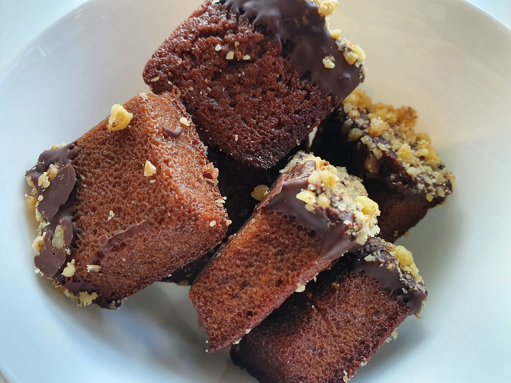
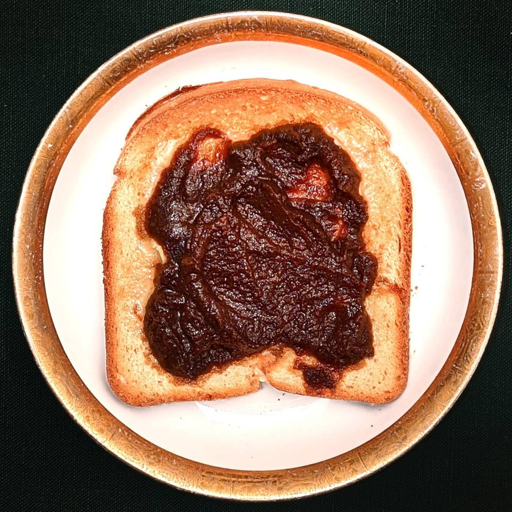
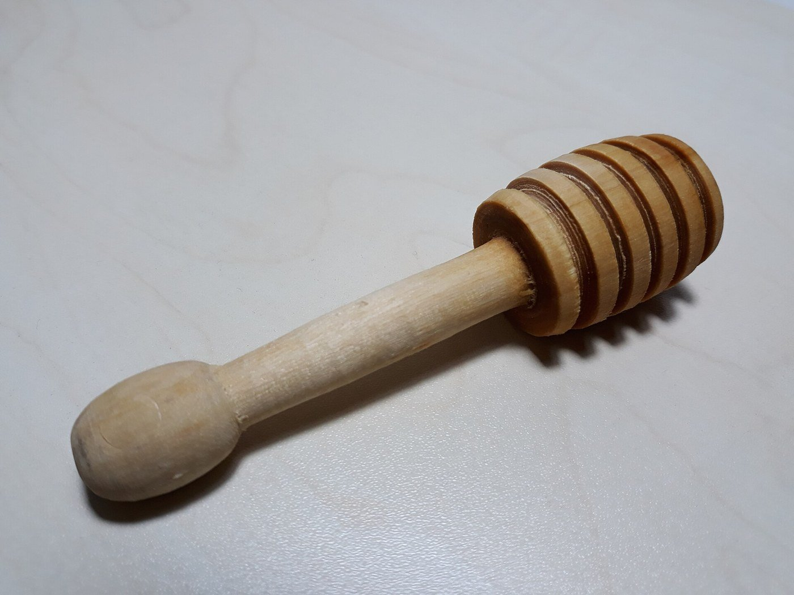

お店の由来・想い
美味しい珈琲を、沢山の方に飲んでいただきたい。
シンドットコーヒーは、愛知県小牧市大草にあるスペシャルティ珈琲の専門店です。以前は「シンカフェ」の名前で営業していたと、グルメサイトに記載があります。
キッチンカー(軽トラック)の紹介ページには、オーナーの「美味しい珈琲を沢山の方に飲んで頂きたいです。」という言葉が載っています。このページの合言葉は、そこから決めました。ひと粒ずつ丁寧に選ばれた豆の一杯が、できるだけ多くの人に届きますように。
確認できた事実: 所在地、スペシャルティ珈琲専門店であること(Instagramのプロフィール)、キッチンカーでスペシャルティ豆のドリップとエスプレッソドリンクを提供していること、上記のオーナーの言葉(キッチンカー紹介ページ)。
店名「シンドット」の意味や由来は確認できていません。見出しやキャッチコピーなど、上記以外の言い回しは制作側のイメージです。
珈琲のイメージ
豆、湯気、ほっとするひととき。
写真はフリー素材のイメージで、お店の実際の様子ではありません。








口コミ
こんなお声が聞けたら(イメージ例)
以下は制作側が創作したイメージ例で、実在のお客様の声ではありません。
イメージ例
豆の香りがふわっと立ちのぼって、一口目からほっとしました。ゆっくり味わいたくなる一杯です。
イメージ例
ひとりでも入りやすい雰囲気で、本を読みながら過ごせました。また寄りたいです。
イメージ例
コーヒーに詳しくなくても、好みを聞きながら選べて安心でした。
アクセス・ご案内
小牧市大草で、お待ちしています。
| 所在地 | 〒485-0802 愛知県小牧市大草4185-1 |
|---|---|
| 電話 | 準備中 |
| 営業時間 | 準備中 |
| 定休日 | 準備中(Instagramのプロフィールには「不定休」とあります) |
| SNS | Instagram @sin.coffee_komaki |